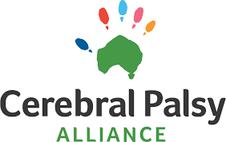
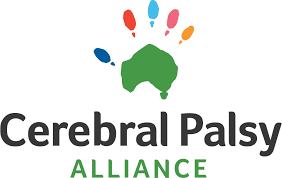
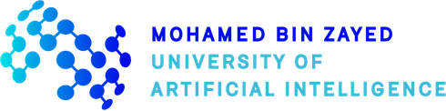
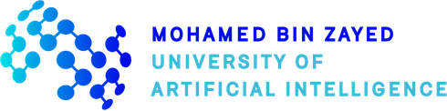

Tongliang Liu
Home
 |
Tongliang Liu
Director of Sydney AI Centre
Address: Room 315/J12 1 Cleveland St, Darlington, NSW 2008, Australia |
|
Short Bio
Tongliang Liu has published more than 200 papers at leading ML/AI conferences and journals. He received the CORE Award for Outstanding Research Contribution in 2024, IEEE AI's 10 to Watch Award in 2023, Eureka Prize shortlist for Emerging Leader in Science in 2023, ARC Future Fellowship Award in 2022, Faculty Early Career Research Excellence Award in 2021, the Top-40 Early Achievers by The Australian in 2020, and the ARC DECRA Award in 2018. He also received multiple faculty awards, e.g., from OPPO and Meituan. Tongliang is also very proud of his talented students, who have made/are making/will make significant contributions to advancing science. They have also been recognised by many awards, e.g., Google PhD Fellowship Awards.
Tongliang Liu is the Director of Sydney AI Centre and an Associate Professor at The University of Sydney, Australia; an Affiliated Associate Professor in Machine Learning with Mohamed bin Zayed University of Artificial Intelligence, United Arab Emirates; a Visiting Professor of University of Science and Technology of China, Hefei, China; a Visiting Scientist of RIKEN AIP, Tokyo, Japan.
His research interests lie in providing mathematical and theoretical foundations to justify and understand machine learning models and designing efficient learning algorithms for problems in the field of trustworthy machine learning, with a particular emphasis on
Learning with noisy labels,
Deep adversarial learning,
Causal representation learning,
Deep transfer learning,
Deep unsupervised learning,
Statistical deep learning theory.
We are looking for visiting scholars for Asian Trustworthy Machine Learning (ATML) Fellowships. See more details here.
Top News
02/2024, I am honoured to be named an AI Future Leader by AI Magazine: "Top 10: Future AI Leaders".
12/2023, I am a notable Area Chair for NeurIPS 2023.
12/2023, I am honoured to receive the CORE Award for Outstanding Research Contribution.
11/2023, my student Muyang Li Received the Best Poster Award in ML and AI from the School of Computer Science! Congrats Muyang!
09/2023, my student Yang Zhou got the University Medal! Congrats Yang!
09/2023, my student Junzhi Ning got the University Medal! Congrats Junzhi!
07/2023, my student Jiacheng Zhang got the University Medal! Congrats Jiacheng!
07/2023, I am honoured to be shortlist for the Eureka Prize for Emerging Leader in Science.
05/2023, I am honoured to receive the IEEE AI's 10 to Watch Award by the IEEE Computer Society. [PDF]
04/2023, We have organised the MBZUAI-RIKEN AIP joint workshop on intelligent systems.
03/2023, my student Muyang Li got the Top Final Year High Honour Roll! Congrats Muyang!
03/2023, I am a notable Area Chair for ICLR 2023.
09/2022, I was selected as an Australian Research Council Future Fellow
(only three researchers across Australia was awarded in the field of Information and Computing Sciences in 2022).09/2022, I was appointed as a Visiting Professor with University of Science and Technology of China.
09/2022, I was appointed as a Visiting Associate Professor with Mohammed Bin Zayed University of Artificial Intelligence.
08/2022, I am in the editorial board of JMLR.
08/2022, I was elected as one of the editorial board of the ML journal.
08/2022, Two of my PhD students have got Google PhD Fellowship Awards. Congrats Xiaobo and Shuo!
04/2022, I was selected as one of Global Top Young Chinese Scholars in AI by Baidu Scholar 2022.
03/2022, I will co-organize IJCAI 2022 Challenge on Learning with Noisy Labels.
02/2022, my student James Wood got the University Medal! Congrats James!
02/2022, my monograph on learning with noisy labels has been accepted by MIT Press.
12/2021, I received the Faculty Early Career Research Excellence Award, University of Sydney.
04/2021, we are organising a speical issue at the ML Journal.
02/2021, we are organising the first Australia-Japan Workshop on Machine Learning.
9/2020, I was named in the Early Achievers Leaderboard by The Australian.
Selected Publications on Learning with Noisy Labels
Which is Better for Learning with Noisy Labels: The Semi-supervised Method or Modeling Label Noise? [PDF] [CODE]
Y. Yao, M. Gong, Y. Du, J. Yu, B. Han, K. Zhang, and T. Liu.
In ICML, 2023.RSA: Reducing Semantic Shift from Aggressive Augmentations for Self-supervised Learning. [PDF] [CODE]
Y. Bai, E. Yang, Z. Wang, Y. Du, B. Han, C. Deng, D. Wang, and T. Liu.
In NeurIPS, 2022.Estimating Noise Transition Matrix with Label Correlations for Noisy Multi-Label Learning. [PDF] [CODE] [Spotlight]
S. Li, X. Xia, H. Zhang, Y. Zhan, S. Ge, and T. Liu.
In NeurIPS, 2022.Class-Dependent Label-Noise Learning with Cycle-Consistency Regularization. [PDF] [CODE]
D. Cheng, Y. Ning, N. Wang, X. Gao, H. Yang, Y. Du, B. Han, and T. Liu.
In NeurIPS, 2022.Estimating Instance-dependent Bayes-label Transition Matrix using a Deep Neural Network. [PDF] [CODE]
S. Yang, E. Yang, B. Han, Y. Liu, M. Xu, G. Niu, and T. Liu.
In ICML, 2022.Selective-Supervised Contrastive Learning with Noisy Labels. [PDF] [CODE]
S. Li, X. Xia, S. Ge, and T. Liu.
In CVPR, 2022.Instance-Dependent Label-Noise Learning With Manifold-Regularized Transition Matrix Estimation. [PDF] [CODE]
D. Cheng, T. Liu, Y. Ning, N. Wang, B. Han, G. Niu, X. Gao, and M. Sugiyama.
In CVPR, 2022.Rethinking Class-Prior Estimation for Positive-Unlabeled Learning. [PDF] [CODE]
Y. Yao, T. Liu, B. Han, M. Gong, G. Niu, M. Sugiyama, and Dacheng Tao
In ICLR, 2022.Sample Selection with Uncertainty of Losses for Learning with Noisy Labels. [PDF] [CODE]
X. Xia, T. Liu, B. Han, M. Gong, J. Yu, G. Niu, and M. Sugiyama
In ICLR, 2022.Me-Momentum: Extracting Hard Confident Examples from Noisily Labeled Data [PDF] [CODE] [Oral]
Y. Bai and T. Liu
In ICCV, 2021.Instance-Dependent Label-Noise Learning under Structural Causal Models. [PDF] [CODE]
Y. Yao, T. Liu, M. Gong, B. Han, G. Niu, and K. Zhang.
In NeurIPS, 2021.Understanding and Improving Early Stopping for Learning with Noisy Labels. [PDF] [CODE]
Y, Bai, E. Yang, B. Han, Y. Yang, J. Li, Y. Mao, G. Niu, and T. Liu.
In NeurIPS, 2021.Provably End-to-end Label-noise Learning without Anchor Points. [PDF] [CODE]
X. Li, T. Liu, B. Han, G. Niu, and M. Sugiyama
In ICML, 2021.Class2Simi: A Noise Reduction Perspective on Learning with Noisy Labels. [PDF] [CODE]
S. Wu*, X. Xia*, T. Liu, B. Han, M. Gong, N. Wang, H. Liu, and G. Niu
In ICML, 2021.A Second-Order Approach to Learning with Instance-Dependent Label Noise. [PDF] [CODE] [Oral]
Z. Zhu, T. Liu, and Y. Liu.
In CVPR, 2021.Robust early-learning: Hindering the memorization of noisy labels. [PDF] [CODE]
X. Xia, T. Liu, B. Han, C. Gong, N. Wang, Z. Ge, and Y. Chang.
In ICLR, 2021.Part-dependent Label Noise: Towards Instance-dependent Label Noise. [PDF] [CODE] [Spotlight]
X. Xia, T. Liu, B. Han, N. Wang, M. Gong, H. Liu, G. Niu, D. Tao, and M. Sugiyama.
In NeurIPS, 2020.Dual T: Reducing Estimation Error for Transition Matrix in Label-noise Learning. [PDF] [CODE]
Y. Yao, T. Liu, B. Han, M. Gong, J. Deng, G. Niu, and M. Sugiyama.
In NeurIPS, 2020.Learning with Bounded Instance- and Label-dependent Label Noise. [PDF] [CODE]
J. Cheng, T. Liu, K. Rao, and D. Tao.
In ICML, 2020.Are Anchor Points Really Indispensable in Label-Noise Learning? [PDF] [CODE]
X. Xia, T. Liu, N. Wang, B. Han, C. Gong, G. Niu, and M. Sugiyama.
In NeurIPS, 2019.Learning with Biased Complementary Labels. [PDF] [CODE] [Oral]
X. Yu, T. Liu, M. Gong, and D. Tao.
In ECCV, 2018.Classification with Noisy Labels by Importance Reweighting. [PDF] [CODE]
T. Liu and D. Tao.
IEEE T-PAMI, 38(3): 447-461, 2015.
- Talk: Learning with noisy labels
Selected Publications on Adversarial Learning
Phase-aware Adversarial Defense for Improving Adversarial Robustness. [PDF] [CODE]
D. Zhou, N. Wang, H. Yang, X. Gao, and T. Liu.
In ICML, 2023.Eliminating Adversarial Noise via Information Discard and Robust Representation Restoration. [PDF] [CODE]
D. Zhou, Y. Chen, N. Wang, D. Liu, X. Gao, and T. Liu.
In ICML, 2023.Modeling Adversarial Noise for Adversarial Defense. [PDF] [CODE]
D. Zhou, N. Wang, B. Han, and T. Liu.
In ICML, 2022.Improving Adversarial Robustness via Mutual Information Estimation. [PDF] [CODE]
D. Zhou, N. Wang, X. Gao, B. Han, X. Wang, Y. Zhan, and T. Liu.
In ICML, 2022.Understanding Robust Overfitting of Adversarial Training and Beyond. [PDF] [CODE]
C. Yu, B. Han, L. Shen, J. Yu, C. Gong, M. Gong, and T. Liu.
In ICML, 2022.Adversarial Robustness Through the Lens of Causality. [PDF] [CODE]
Y. Zhang, M. Gong, T. Liu, G. Niu, X. Tian, B. Han, B. Schölkopf, and K. Zhang
In ICLR, 2022.Removing Adversarial Noise in Class Activation Feature Space. [PDF] [CODE]
D. Zhou, N. Wang, C. Peng, X. Gao, X. Wang, J. Yu, T. Liu
In ICCV, 2021.Towards Defending against Adversarial Examples via Attack-Invariant Features. [PDF] [CODE]
D. Zhou, T. Liu, B. Han, N. Wang, C. Peng, and X. Gao
In ICML, 2021.
Selected Publications on Transfer Learning
Confident-Anchor-Induced Multi-Source-Free Domain Adaptation. [PDF] [CODE]
J. Dong, Z. Fang, A. Liu, G. Sun, and T. Liu.
In NeurIPS, 2021.Domain Generalization via Entropy Regularization. [PDF] [CODE]
S. Zhao, M. Gong, T. Liu, H. Fu, and D. Tao.
In NeurIPS, 2020.Transferring Knowledge Fragments for Learning Distance Metric from A Heterogeneous Domain. [Paper] [CODE]
Y. Luo, Y. Wen, T. Liu, and D. Tao.
IEEE T-PAMI, 41(4): 1013-1026, 2019.
LTF: A Label Transformation Framework for Correcting Label Shift. [PDF] [CODE]
J. Guo, M. Gong, T. Liu, K. Zhang, and D. Tao.
In ICML, 2020.Deep Domain Generalization via Conditional Invariant Adversarial Networks. [PDF] [CODE]
Y. Li, X. Tian, M. Gong, Y. Liu, T. Liu, K. Zhang, and D. Tao.
In ECCV, 2018.Understanding How Feature Structure Transfers in Transfer Learning. [PDF]
T. Liu, Q. Yang, and D. Tao.
In IJCAI, 2017.Domain Adaptation with Conditional Transferable Components. [PDF] [CODE]
M. Gong, K. Zhang, T. Liu, D. Tao, C. Glymour, and B. Schölkopf.
In ICML, 2106.
Selected Publications on Statistical (Deep) Learning Theory
On the Rates of Convergence from Surrogate Risk Minimizers to the Bayes Optimal Classifier. [PDF]
J. Zhang, T. Liu, and D. Tao.
IEEE T-NNLS, accepted 2021.
Control Batch Size and Learning Rate to Generalize Well: Theoretical and Empirical Evidence. [PDF]
F. He, T. Liu, and D. Tao.
In NeurIPS, 2019.Algorithmic Stability and Hypothesis Complexity. [PDF]
T. Liu, G. Lugosi, G. Neu and D. Tao.
In ICML , 2017.Algorithm-Dependent Generalization Bounds for Multi-Task Learning. [Paper]
T. Liu, D. Tao, M. Song, and S. J. Maybank.
IEEE T-PAMI, 39(2): 227-241, 2017.


 


 
